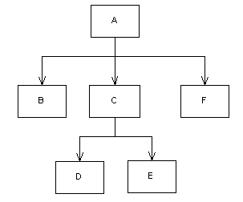
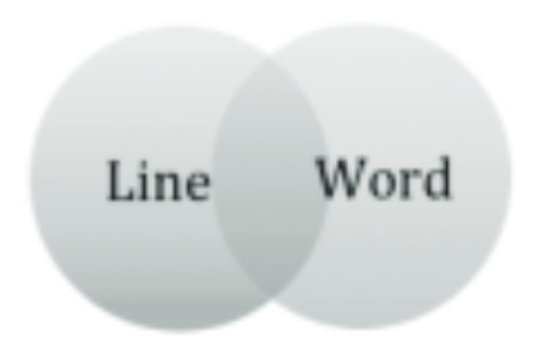
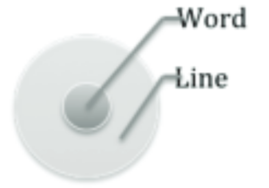

<Traversing_the_Tree/>
Exploring Ontological and Pragmatic Approaches to Markup Theory in Digital Humanities
Introduction
Please right click and select "view source" to see what this text actually looks like.
Digital humanities is an area of study that explores the intersection of computing and the humanities. Often, computing tools are used to answer humanities based research questions. Digital humanities, or humanities computing, is becoming an increasingly prevalent area of academic study. In particular, digital humanities scholarship is beginning to permeate the study of literature. The recent increase in digital texts is not only impacting the accessibility of texts, but is also challenging concepts of textuality and redefining literary scholarship. Part of this trend is necessitated by cultural shifts: in the age of Google Books, blogs, online newspapers, and Wikipedia, it would be negligent for scholars to ignore the changing relationships between reader, scholar, and text. Because of digital texts, more readers are able to access literary scholarship and perform their own textual research. For example, the search function available in most digital documents allows any reader to instantaneously determine word frequencies. Many websites display textual information, data, and visualizations that would be inaccessible or unavailable without computing tools.1
Digital humanities is not only impacting the presentation and accessibility of resources, but is also creating opportunities for scholars to ask new questions; the integration of computing tools into literary research is shaping the way scholars can interrogate their texts. This is not to say that the study of digital humanities is making literary research more objective. The anxiety that computing tools are taking the “human” out of the humanities overlooks the fact that computers do not have the power to analyze or interpret data. Thomas Rommel, a literary scholar and digital humanist, astutely points out in “A Companion to Digital Humanities” that the strength of using computing tools in literary scholarship is that they provide speed, accuracy, unlimited memory, and instantaneous access to virtually all textual features, but are still completely reliant on the scholar.2 The systematic analysis of literature based on quantitative textual features has always been a part of literary study. For example, scholars have used concordances for centuries to study patterns and data sets present in a text. Digital tools allow scholars to sample larger amounts of texts and perform a more complete comparison of the differences among sets of texts. If anything, with more data readily available at their fingertips, scholars have to work harder to figure out which lines of inquiry will yield productive results.
Understanding these emerging relationships involves investigating how digital texts themselves are created, a process at the heart of all digital humanities scholarship. This paper seeks to further the idea that the advent of digital texts and technologies in the humanities must be met with a critical interrogation of the procedures being used and the ideologies behind them. This is not a new idea; the study of how transcription methods and editing practices affect print texts is well established. Many similarities can be found between the creation of digital and print versions of a text. The encoding process demands that the scholar makes a decision in terms of classifying elements of the text. Similarly, when new versions of a print text are created, editorial decisions are often made about ambiguous elements of the text. For example, the punctuation used in different print versions of William Blake’s Songs of Innocence and Experience widely varies because the intended punctuation in the illuminated versions is unclear.3
There are differences between the two processes as well. Perhaps most significantly, even if a transcribed digital copy of a text is formatted in the same way as the print version, acts of interpretation and classification occur during the encoding process and exist in the marked up version. This is because the process of markup used in digital humanities is intended to be descriptive.4 This is not the case in the creation of a printed text. If the goal of creating a print transcription is to visually reproduce the text, classifications of meaning do not have to be made. In such a case, whether or not the mark at the end of a poem was intended as a period or a comma is irrelevant, it’s shape, color, and size are important. However, in the creation of a digital version of a text, decisions about classification are made even if the focus is on rendering a digital version that is visually similar to the original. In addition, the marked up version of a text exists for as long as the “readable” version exists. As a related point, different modes of classification and textual interpretation in the creation of a digital text can be made to achieve the same visual result.
The Implications of Encoding
If it is true that the interpretive decisions made “behind the scenes” do not necessarily affect the presentation of the text, why do the methodologies used for encoding matter? The answer to this question has three components. The first is that while descriptive markup may not affect the potential visual presentation of the text, it does significantly affect any queries run on the text. For example, suppose a scholar encounters a text in which the content between quotation marks includes words that are not part of a spoken quotation:
Assuming that the scholar does not want to compromise the integrity of the text by relocating the questions marks, she is faced with a number of ways to classify and interpret this text: she could label the example as either one or two separate quotations. Whether or not the scholar decides to label this instance as one quotation or two quotations separated by the phrase “said the girl” does not impact the way that the text can be rendered after the markup process. However, the methodology would affect a count of quotations within the text and would also impact the number of letters contained within the quotation.5
The second reason that the encoded text is important is that the creation of a digital text is an active, interpretive process. This process is cyclical: on the one hand the scholar’s understanding of the text shapes the way in which she chooses to encode the text. On the other hand, the constraints of the markup process and the ideology behind it affect the way the scholar perceives the text. This last point is particularly relevant, though it has been largely ignored, when discussing the importance of markup philosophy, since it acknowledges the potential for the system of formalizing a text to limit the literary scholar. It also suggests that the study of markup should be focused on the activity of encoding and how the scholar interacts with this process.6
Building off of the relationship between markup and scholar, it becomes clear that the rules and constraints of the markup system used can impact the reader as well. The scholar’s choices of categorization and formalization may impact a reader’s interpretation of the text. For example, if a reader were to observe that a line of a poem by John Donne had been encoded as an example of “metaphysicalDeceit,”7 their interpretation of the line might change in the same way it would from reading a piece of criticism.8 This makes sense, since both the markup process and literary criticism are based on interpretation. However, since the scholar’s acts of interpretation are in part based on the constraints of the markup system, the reader’s perception of the text is indirectly influenced by the markup system.
This argument is dependent on the reader seeing and understanding the encoded text. Because most people who read digital texts do not observe them in their encoded form, this is a weak argument. However, it is likely that over the next several years coding literacy will increase, making it more probable that readers will view the source files of documents. The motivation behind this might come from a desire to “decode” the code, or understand the methods of interpretation and inscription behind any given text, something that is present in the study and consumption of print media today. A more immediate and convincing argument about the relationship between reader and scholar is that the digital resources and information available to the general public are determined by the questions a scholar asks of her texts. By way of a trickle down effect then, the structure of the markup system also impacts readers even if they have not viewed a text in its encoded form.
In light of the relationships between text, markup, scholar, and reader, the next logical question is: What are the constraints of current markup procedure, and how are they impacting research? In order to fully discuss this question, it is necessary to give some background information about the history and evolution of text encoding.
Text Encoding
The most current and widely used method of describing, or marking up, a text so that it is machine-readable, is XML (eXtensible Markup Language). XML grew of out of SGML (Standard Generalized Markup Language), a language that was developed for data encoding and the sharing of machine-readable texts in the late 1980’s. It is important to note that, although SGML was developed to encode texts, its original goals were very different from the way humanities scholars now use XML. SGML was intended to facilitate the sharing and storage of large-project documents in law, government, and industry.9 When SGML was developed it was assumed that the system of formal features described would be based exclusively on a text’s genre. SGML was not developed for application in humanities scholarship and the primary concerns driving its creation were practical. One such practical concern focused on creating a model that would be accessible and easy to use.10 The history and development of text encoding suggest that it might be necessary for literary scholars to reassess and reclaim the tools they are currently using. It seems strange that methodologies developed around principles of practicality are being used to determine textual interpretation and meaning. This begs the question: Are the text encoding methodologies used in literary scholarship rooted in principles foreign to their current purpose and use?
Surprisingly, most of the scholarship on the philosophy of markup is from the 1980’s and 1990’s and is thus focused on SGML as opposed to XML. The discontinuation of the SGML debate was not a result of significant improvements. Rather, it seems as if with the creation of XML, most scholars accepted the shortcomings of SGML and XML as unavoidable. Although there are differences between SGML and XML they both share the same formal logic. Encoding a text with XML involves wrapping the text in tags, markup that describes components of the text. Tags divide the text into elements. Elements include tags and everything in between them. For example, in the following sample the text, “This is a sample,” is wrapped between a sentence start tag and a sentence end tag. End tags always contain a slash. The entire example constitutes a sentence element.
<sentence>This is a sample.</sentence>XML, unlike most other languages, does not have predefined tag sets. This essentially means that the scholar determines the “name” of a tag. In the above example the word “sentence” could be replaced with any other word and still be processed the same way. Other languages may include syntax that seems deceptively like prose, for example Shakespeare language allows the user to program by creating sentences including nouns, adjectives, characters, and scenes. However, such languages, unlike XML, do not allow for the valid input of virtually any Unicode character.11 This aspect of XML makes it remarkably similar to a human language, and in fact the experience of writing XML is in many ways similar to writing prose. However, it is important to remember that the “names” are not read or understood by the computer. Because humans can comprehend the words written in XML, it is easy to think that a computer is processing the text in a similar way. However, the computer is processing XML as binary machine code.
Writing in a language that does not have pre-defined tag sets increases the effect of the markup process on the scholar. For example, take the following sample of text:
To interact with a digital version of House of Leaves, click here
In its source document, the above snippet of text was displayed with line breaks
between a preceding and following paragraph. If the scholar were to encode this
snippet of text with HTML, a language with predefined tag sets, a <p>
tag, or paragraph tag, would most likely be used. There are no other options in HTML
that come close to describing the above sample. However, being given the complete
freedom to “name” the sample makes the classification more difficult. It also makes
it more thought provoking. Is it in fact a paragraph? The first word, which is part
of “untouchable,” is cut off and there is no indentation. The scholar could choose
to label the sample as any number of things, including
<paragraph>, <text_block>, or <incomplete_p>. Each of these options
represents a separate interpretation of the text.
Though the scholar is free to choose the words that describe the text, SGML, XML, and the TEI, a standardized subset of XML that includes its own rules and list of valid textual components, have specific rules about the way in which the text can be tagged. All of these languages are based on the idea that texts can be represented as ordered hierarchies of content objects (OHCO). This approach is modeled after the computer science concept of a tree data structure. Tree structures are based on a hierarchy in which individual components, or nodes, form parent, child, and sibling relationships. In the following diagram, the parent node is represented by box A. Boxes B, C, and F are siblings because they are the immediate children of A.
13The rules of XML revolve around forming and maintaining this type of hierarchal structure. If the structure produced does not follow these rules, it is said to be invalid, and cannot be processed. In order for a document to be valid, it must have a root node and be properly nested. A root node is the topmost node in a tree and consequently is the only node not to have a parent. In this diagram the root node would be box A. In order for markup to be properly nested, there must be no overlapping hierarchies.14 If the text is going to be used for research purpose, after it has been marked up, the hierarchal structure is used to traverse the document and pull out information relevant to a scholar’s query.
Overall, the tree based approach works very well. Having to impose a hierarchical structure often leads scholars to notice new or unusual structural features of a text. Perhaps this explains why in the last fifteen years there have been very few works of scholarship that explore or criticize this model and few attempts have been made to refine it.15 The main reason for the success of OHCO based system is that most texts lend themselves well to a hierarchical structure. Books contain chapters that contain paragraphs that contain sentences etc. However, this model is not foolproof. In particular, many texts contain overlapping hierarchies. Although there are a variety of methods in place to circumvent this issue, overlapping hierarchies need to be thought of as something more than an “exception” to the rule. The fact that they exist at all suggests a more fundamental problem with the way that hierarchy based methods define a text.
Overlapping Hierarchies
SGML was originally intended to represent a single, logical, hierarchy in a document. It was assumed that each document could only have one logical hierarchy and that the hierarchy would be determinate on genre. For example, the typical document hierarchy for a script might be: cast list, performance history, title, stage directions, act, scene, line.16 Once SGML and XML started to be used for literary scholarship, it became obvious that there is no single “standard” hierarchy for any given text. Hierarchy came to be dependent on interpretation. Thus, markup reflects a theory of text; there are an unlimited number of logical hierarchies to be found and encoded in any document. This realization opened up the door for a number of problems.
Overlapping hierarchies can occur almost anywhere including the following: when a paragraph extends over multiple pages, when a metaphor extends over multiple sentences, when attempting to encode the hidden message in an acrostic. While overlapping hierarchies can occur in any genre of text, they are often found in poetry. This type of overlapping hierarchy is often caused by enjambment. Take for instance, the poem “The Unrhymable Word: Orange” by Willard Espy: “The four eng-/ineers/Wore orange/brassieres.”17 If a scholar attempted to tag both the lines and the words in this poem, the first two lines would create an overlapping hierarchy:
The relationship between words and lines in this poem does not corresponded to a strictly parent, child, and sibling structure. The first diagram shows the relationships between lines and words that exist in the poem; it shows the interconnected and overlapping nature of the structure. The second diagram shows the type of relationship that OHCO and XML require the scholar to conform to.
18

There are numerous ways to sidestep this problem, one of which would be to use empty
elements to delineate the start and end of the word “engineers.” Empty elements are
self-contained units; they are simultaneously a start and an end tag. The syntax for
such a tag is to insert a slash before the closing bracket: <tag>.
These tags do not wrap around text. Often they are used to include metadata. Using
them in the above poem would look like the following:
While this type of solution does allow the scholar to search for the text between two empty element tags, it does not acknowledge the existence of an overlapping hierarchy of word and line elements. Essentially, it is a way of tricking the system. Since the purpose of XML is to describe a text, this does not seem like an adequate solution. Other potential solutions deal with the issue in a similar way and none reconcile the formative nature of the text with the hierarchal model of the markup procedure. Many scholars ignore the broader implications of overlapping hierarchies, some address the problem in a way that attempts to reconcile its existence with the basic premises of the OHCO model, but very few think that overlapping hierarchies invalidate the OHCO hypothesis.
Why OHCO?
There are several different reasons why digital humanists support the idea that a text can be described in terms of ordered hierarchies. The supporters of OHCO can be split into two major subgroups: those who support the model for practical reasons and those who support it for ontological reasons. Often, the line between these two groups is blurred. The ontological approach seeks to answer the question: “What is text?” and proposes the answer: “Text is an ordered hierarchy of content objects.” The logic for this argument revolves around the idea that the meaning of text can be deduced from determining the parts of a text that, if taken away, change the text into a new text.
In a paper that seeks to defend the OHCO model, “What is Text, Really?,” the authors give the following train of reasoning: “The essential parts of any document form what we call ‘content objects,’ and are of many types, such as paragraphs, quotations, emphatic phrases, and attributions. Each type of content object usually has its own appearance when a document is printed or displayed, but that appearance is superficial and transient rather than essential.”19 According to this theory, if ‘content objects’ are changed, either by removing them or changing their order, a new document is produced. If formatting, such as font type, is changed the text remains the same. The authors go on to say that “most content objects are contained in larger content objects, such as subsections, sections, and chapters…Generally, smaller content objects do not cross the boundaries of larger ones; thus a paragraph will not begin in one chapter and end in the next. For this reason, the structure of a document is a hierarchical one, like a tree.”20
There are several problems with this reasoning. In a paper that criticizes this argument, “Refining Our Notion of What Text Really Is: The Problem of Overlapping Hierarchies,” the authors point out that even the ontological argument in favor of OHCO is motivated by practicality: “The partisans of content-oriented text processing and descriptive markup claimed that treating texts as if they were ordered hierarchies of content objects had many practical benefits, while alternative representational practices resulted in various inefficiencies and inadequacies. It was a short step from noting the practical advantages of treating texts as if they were OHCOs to explaining those advantages by the hypothesis that texts are OHCOs.”21 Interestingly, three of the authors of this paper authored “What Is Text, Really?” three years earlier. One of the problems they point out is that the proponents of OHCO take a preexisting model of markup procedure, SGML, which was not designed for fully describing texts, and attempt to justify its approach by arguing that it is practical. This is a problem because they are attempting to answer an ontological question, what is text, with a purely pragmatic answer. “What is Text, Really?” often fall into this faulty logic. The fact that OHCO can work and that it works better than its predecessors are practical observations and have nothing to do with the nature of text. The argument that most texts can conform to a hierarchal model does not equate to “all texts are ordered hierarchies of content objects.”
There are other problems with the ontological argument that opponents do not acknowledge. “Refining Our Notion of What Text Really Is,” addresses the fact that ordered hierarchies are a debatable model, but the article does not question the idea that a text is composed of “content objects.” It makes sense that formatting would not be considered important for the original purpose of SGML, sharing law documents. However, contrary to the OHCO argument, formatting and visual presentation can be “essential” elements of a text. An example of the importance of presentation in creating meaning can be found in Mark Z. Danielewski’s novel, House of Leaves.22 Changing either the “content objects” or the formatting in House of Leaves fundamentally changes the text.
There are many visual components of House of Leaves that reference the narrative and are integral to the experience of reading the text. One such component is the use of different fonts. Three separate characters narrate House of Leaves, Johnny Truant, Zampano, and the editor, each of which is represented by a different type-font. Rather than have the narrators take control of entire chapters, Danielewski structured the novel so that each narrator often has a portion of the same chapter. If the book is reorganized so that each narrator’s story occurs in sequence the text changes even though the component parts are still present. This is because the narrators respond to one another and taking them out of context changes the effect of the novel. In so doing the self-referential nature of the text is eliminated. By having different narrators comment on and add to the text, Danielewski’s novel references itself as a physical textual artifact. In this way, the “content objects” are essential.
However, changing the formatting would impact the novel in a similar way. Sometimes it is impossible to identify which narrator is speaking by the content alone. Eliminating the differences in type-font would make it impossible to parse certain parts of the narrative. Although the authors of “What is Text, Really?” claim that such a change would not fundamentally alter the text, one could still attempt to argue that the formatting of House of Leaves fits into a hierarchal system. Such an argument would assume that the fact that the narrative contains three different type-fonts is important, but not the type-fonts themselves. This is also wrong; the type-fonts were picked intentionally and reference the character with which they are associated. For example, Johnny Truant’s text is written in courier. Within the narrative Johnny functions as a messenger, delivering the text to the reader.
There are countless other examples of texts whose visually elements and styling are integral parts of the narrative structure and in fact one could argue that this is true of all texts. While the assumption that formatting is not “essential” does not directly impact markup procedure in digital humanities, the fact that the ontological OHCO model operates on this faulty assumption indicates that the intended use of OHCO encoding is not inline with its current use.
The pragmatic argument for OHCO is not dependent on the assumption that text is composed of content objects because they are the only “essential” part of a text. Instead, this argument focuses on the practical applications of the OHCO model and argues that the success of the model means that it accurately reflects the nature of text. This approach is harder to argue with. Compared to its predecessors, SGML and XML function much more efficiently as text encoding languages.23 Also, revisions of the OHCO thesis suggest a way in which overlapping hierarchies are not at odds with the OHCO model, a tempting argument given its practical advantages. In this argument, hierarchies that overlap are considered to belong to a different sub-hierarchy: x is a sub-perspective of y if and only if x is a perspective and y is a perspective and the rules, theories, methods, and practices of x are all included in the rules, theories, methods, and practices of y, but not vice versa.24 By this logic, any overlapping hierarchy can be decomposed into sub-perspectives of the text. However, the “rules, theories, methods, and practices” mentioned seem completely open to interpretation. By this definition it seems as if any perspective could be ruled a sub-perspective of another perspective.
The practical benefits of OHCO combined with this revision might initially seem to eradicate doubts about the validity of the model. However, upon a close examination, problems still exist. The authors of “Refining our Notion of What Text Is” point out that there are cases in which overlapping hierarchies are created by objects that self-overlap, or overlap with more of the same type of object. For example, if a question overlaps with a line in a poem, it could be argued that questions and lines are elements of different perspectives. If, on the other hand, two stories overlap with one another, this argument falls apart.
However, even without contemplating the existence of self-overlapping objects, the revision is hard to digest. The creation of sub-perspectives seems ambiguous and arbitrary. Even if it is true that overlapping hierarchies are really perspectives and sub-perspectives, the coding solutions remain the same. Either perspectives and sub-perspectives can be circumnavigated with coding tricks, or, perhaps more inline with this revision, different perspectives can be marked up in multiple copies of a document. These solutions are not adequate. If there is still no way to represent “perspective and sub-perspectives” as coexisting features of the same document, the revision is useless.
Despite these difficulties, ultimately, the practical benefits of OHCO are real. While the ontological argument has more obvious flaws, the practical approach is grounded in almost ten years of largely successful XML encoding in the humanities. However, there is a difference between acknowledging the usefulness of these languages, and assuming that their superiority over previous models precludes the development of new and better technologies not based on the OHCO model. In light of the difficulties posed by overlapping hierarchies, it seems counterproductive that both the ontological and pragmatic arguments for OHCO cling to the validity of the current markup model.
The Appeal of OHCO
If there are so many issues with the OHCO argument, where does the inclination to treat it as a definitive and infallible model come from? A good insight into this question might come from the way that scholars feel about the process of text encoding. Though “feel” is hard to measure, Stephen Ramsay, a programmer and digital humanist, offers some particularly useful insights. Ramsay refers to the encoding process as an act of creation: “As humanists, we are inclined to read maps (to pick one example) as texts…But making a map (with a GIS system, say) is an entirely different experience… Building is, for us, a new kind of hermeneutic – one that is quite a bit more radical than taking the traditional methods of humanistic inquiry and applying them to digital objects.”25
Comparing encoding to building is particularly useful in that it highlights the relationship between the scholar and markup language as that of builder and tool. As with most tools, if they get the job done there is no reason to question them. XML gets the job done. In addition, the basic syntax of XML makes the language seem deceptively open ended. Because the scholar has complete control in determining tag names and in determining which textual elements to tag, the limitation of the language are not always obvious. Also, current approaches for dealing with overlapping hierarchies are very easy to implement, even though they do not fully address the problem.
Another helpful way of thinking about the allure of OHCO might be as follows. For a long time people thought CD players were wonderful. Although CD players could not play videos, this was not recognized as a “problem” or inadequacy because a video playing CD player was unimaginable. Most owners of portable CD players did not stop to question the fundamental design properties of the tool they were using to listen to music. The people who did stop to consider the fundamental design principles of CD players were the engineers making them: people who were intimately familiar with the basic principles behind the creation process. Eventually, the iPod came out and changed the way people viewed their music players. Engineers were able to conceive of a future technological advance because they understood the basic design principles behind it and could determine what was feasible.
Most digital humanists do not fully understand the tools they are using or the principles behind them. Nor are the aware of the history of SGML and XML. They know that, for the most part, the tools work. Humanities scholars, the people who care about the ontological aspects of the markup model, cannot understand how another model might exist without better understanding the current system. Thus, many scholars fall into the trap of unquestionably accepting the OHCO model. Scholars need to be aware of the fact that the tools they are using were not designed for them, and that other options are available. This does not mean that scholars should disavow the current system. However, in order to improve, there needs to be more room for inquiry.
Alternatives and Conclusions
CONCUR, an alternative to the OHCO approach, was originally a feature of SGML but has fallen out of use mainly because it creates cumbersome and verbose markup. It is based on the principle of concurrent data structures, a way of dealing with multiple threads of data at the same time. CONCUR allows for a document to be simultaneously marked up in multiple conflicting hierarchical tag-sets. CONCUR was not included as a feature in XML and although some similar languages have been developed, none are widely used in humanities markup.26
Although there are a number of problems with CONCUR, its basic principle, acknowledging and supporting multiple hierarchies simultaneously within a document, could be a useful way of dealing with the inadequacies of the current model. In addition, the principles behind CONCUR may more adequately reflect the relationship between interpretations of a text. It follows that perhaps such a model might also allow for a better relationship between the scholar and the markup procedure she is using to describe a document.
However, with that said, it is important not to adopt the same route as the proponents of the OHCO model. The fact that CONCUR might more conveniently or completely represent certain features of a text does not mean it represents the true nature of what text “really is.” CONCUR, like standard SGML and XML, assumes that a text is composed of hierarchies. While this assumption is not necessarily wrong, emerging markup theories should not assume any principles of previous encoding methods as a given and should be discussed critically from the perspective of the humanities scholar.
The “problems” with the current model of textual markup, such as overlapping hierarchies, indicate a more fundamental issue with the way text encoding has, for the most part, been conceptualized. This is a serious problem because the constraints of markup strategies have serious, real world ramifications in the relationship between text, scholar, and reader. If scholars must fit a text they wish to encode into a hierarchical structure, does this mean that scholars are ignoring significant textual relationships that do not conform to the parent, child, and sibling model? Because they were not originally intended for literary scholarship, SGML and XML cannot be assumed to represent the “true” nature of text, nor can they be assumed to be the best languages for describing texts. The fact that these markup languages have been used successful does not indicate that there is not room for significant improvement. In light of the history and limitations of current markup procedure, literary scholars need to reclaim their methods of transcription. This might not mean that the OHCO model for text encoding needs to be abandoned. However, it is impossible to determine the correct approach to text encoding without opening up a larger discussion about what digital humanists want and need their markup languages to provide.
Footnotes
1. A good example is the website Melville’s Marginalia Online: http://melvillesmarginalia.org/ The site uses digital technology to make the texts accessible to a wider audience and to provide tools and a layout that allow user to perceive patterns in the marginalia that might be visible from reading the print copies.
2. “A Companion to Digital Humanities," ed. Susan Schreibman, Ray Siemens, John Unsworth. Oxford: Blackwell, 2004. http://www.digitalhumanities.org/companion/
3. To view multiple versions of Songs of Innocence and Experience go to “The William Blake Archive”: http://www.blakearchive.org/blake/
4. Descriptive markup seeks to ascribe meaning to a text. XML was intended to be used as a type of descriptive markup. For more information on the different types of markup, see: Coombs, James H., Allen H. Renear, and Steven J. DeRose. “Markup Systems and the Future of Scholarly Text Processing.” Association for Computing Machinery Volume 30, November 1987.
5. I ran across a similar problem in my own research: “Exploring Speech in Russian Fairy Tales.” For more information see: http://ft.obdurodon.org/projectLog.xhtml
6. This idea can be tied into practice theory. For more information see: Scifleet, Paul and Susan P. Williams “Practice Theory and the Foundations of Digital Document Encoding.” Association for Computing Machinery.
7. Often in XML tag names camel case is used. In creating tag names spaces cannot be used, so words are often joined.
8. See: http://donne.obdurodon.org/poetry.html This site contains a project developed by a student in the University of Pittsburgh course “Computational Methods in the Humanities” (ENGLIT 1610).
9. See SGML: The Reason Why and the First Published Hint: http://www.sgmlsource.com/history/jasis.htm Journal of the American Society for Information Science. Volume 48, Number 7 (July 1997)
10. Scifleet, Paul and Susan P. Williams “Practice Theory and the Foundations of Digital Document Encoding.”
11. For more information on Unicode see the Unicode Consortium: http://unicode.org/
12. Danielewski, Mark Z. House of Leaves. New York: Pantheon, 2000. Print.
13. For the source of this image see: http://onjava.com/onjava/2001/02/08/dom.html
14. For more information see: http://www.tei-c.org/release/doc/tei-p4-doc/html/SG.html
15. Renear, Allen, Elli Mylonas, and David Durand, “Refining our Notion of What Text Is”: http://www.stg.brown.edu/resources/stg/monographs/ohco.html
16. Renear, Allen, Elli Mylonas, and David Durand, “Refining our Notion of What Text Is”
17. See: http://en.wikipedia.org/wiki/Orange_(word)
18. Interestingly, I chose to include this diagram because I found myself having a hard time conceptualizing what an overlapping hierarchy is. I spoke to some of my computer science friends and they too had a difficult time visualizing non tree data.
19. Derose, J. Stephen, David G. Durand, Elli Mylonas, and Allen H. Renear “What is Text, Really?” Journal of Computing in Higher Education Winter 1990, Vol. I (2), 3-26
20. Renear, Allen, Elli Mylonas, and David Durand, “Refining our Notion of What Text Is”
21. Renear, Allen, Elli Mylonas, and David Durand, “Refining our Notion of What Text Is”
22. Mark Z. Danielewski's House of Leaves.
23. For a discussion of previous text encoding approaches, see: Derose, J. Stephen, David G. Durand, Elli Mylonas, and Allen H. Renear “What is Text, Really?”
24. Renear, Allen, Elli Mylonas, and David Durand, “Refining our Notion of What Text Is”
25. Ramsay, Stephen. “On Building”: First posted here: http://lenz.unl.edu/papers/2011/01/11/on-building.html (linked via the Wayback Machine)
26. For more information on CONCUR, see: http://conferences.idealliance.org/extreme/html/2005/Witt01/EML2005Witt01.xml and Renear, Allen, Elli Mylonas, and David Durand, “Refining our Notion of What Text Is”